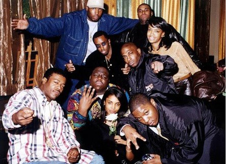

Christopher Wallace
Информация
• Имя при рождении: Кристофер Джордж Латор Уоллес
• Дата рождения: 21 мая 1972
• Дата смерти: 9 марта 1997 (24 года)
• Лейблы: Atlantic Records Group, Arista Records, Uptown Records, Bad Boy Records
• Награды: Зал славы рок-н-ролла (2020)
Псевдонимы
• Biggie Smalls
• Big E. Smalls
• BIG
• The Notorious B.I.G.
• Big Poppa
• Frank White
Коллективы
• Junior M.A.F.I.A.
• The Commission
Навигация

Track 1
Artist 1
Кри́стофер Джо́рдж Лато́р Уо́ллес ,более известный под псевдонимами The Notorious B.I.G., Biggie Smalls и Biggie — американский рэпер, актёр и основатель рэп-группы Junior M.A.F.I.A. Уоллес является одним из самых продаваемых музыкальных исполнителей всех времён.
По состоянию на 2016 год было продано около 40 миллионов его записей по всему миру. Общий объём продаж альбомов Уоллеса в Соединённых Штатах составляет около 21 миллиона записей, в то время как общий объём продаж синглов насчитывает около 7 миллионов. The Notorious B.I.G. входит в десятку самых богатых рэперов в мире. За свою карьеру, а также посмертно, B.I.G. был номинирован на 20 премий, 12 из которых он выиграл. В 2020 году был посмертно включён в «Зал славы рок-н-ролла».
1972–1991: Молодость и аресты
Кристофер Уоллес родился в больнице Святой Марии в Бруклине в Нью-Йорке 21 мая 1972 года и был единственным ребёнком родителей-иммигрантов из Ямайки. Его мать, Волетта Уоллес, была педагогом дошкольного образования, а его отец, Селвин Джордж Латоре, был сварщиком и политиком. Его отец оставил семью, когда Крису было два года, а его мать работала на двух работах, пока растила его. Кристофер вырос в районе Клинтон-Хилл в Бруклине на улице Сейнт-Джеймс Плейс, дом под номером 226, недалеко от границы с районом Бедфорд-Стайвесант в Бруклине. В средней школе «Королевы всех святых» Крис преуспел на занятиях, получив несколько наград по английскому языку. Его прозвали «Big» (рус. Большой) из-за его избыточного веса в возрасте 10 лет. Уоллес сказал, что начал торговать наркотиками, когда ему было около 12 лет. Его мать, часто отсутствующая на работе, не знала о его торговле наркотиками, пока он не стал взрослым.
В подростковом возрасте он начал читать рэп, развлекать людей на улицах и выступал с местными группами The Old Gold Brothers и The Techniques. Его самым ранним сценическим псевдонимом был MC CWest. По его просьбе Крис был переведён из средней школы имени епископа Лафлина (англ. Bishop Loughlin Memorial High School) в среднюю школу Джорджа Вестингауза (англ. George Westinghouse Career and Technical Education High School), в которой в то время также учились будущие рэперы DMX, Jay-Z и Busta Rhymes. По словам его матери, Кристофер всё ещё был хорошим учеником, но в новой школе он начал строить из себя умника. В 1989 году, в 17 лет, Кристофер бросил школу и у него начали появляться проблемы с законом. В 1989 году он был арестован по обвинению в хранении оружия в Бруклине и приговорён к 5 годам условно. В 1990 году он был арестован по обвинению в нарушении его испытательного срока. Год спустя Крис был арестован в Северной Каролине за продажу кокаина. Он провёл 9 месяцев в тюрьме, прежде чем выйти под залог.
1991–1993: Начало карьеры и первый ребёнок
Выйдя из тюрьмы, Крис сделал демо-запись «Microphone Murderer» под псевдонимом Biggie Smalls, ссылаясь на персонажа фильма Let's Do It Again 1975 года, а также на его рост; его рост был 6 футов 3 дюйма (1,91 м) и он весил от 300 до 380 фунтов (140—170 кг) по разным данным. Сообщается, что запись была сделана без серьёзного намерения заключить контракт со звукозаписывающей компанией. Однако этому способствовал нью-йоркский диджей Mister Cee, который ранее работал с Big Daddy Kane, и в 1992 году это демо услышал редактор журнала The Source.
В марте 1992 года в журнале The Source была опубликована статья про Криса в колонке «Unsigned Hype», посвящённой начинающим рэперам. Демо-запись услышал A&R-менеджер лейбла Uptown Records и рекорд-продюсер Шон Комбс, который организовал встречу с Уоллесом. Крис был сразу же подписан на лейбл Uptown Records и поучаствовал в треке «A Buncha Niggas» у артистов этого лейбла, Heavy D & The Boyz. В 1992 году Кристофер получил известность благодаря ремиксу на сингл Mary J. Blige «Real Love», на котором он поучаствовал под псевдонимом Big E. Smalls. Он записывался под этим именем до того, как обнаружил, что оригинальное прозвище «Biggie Smalls» уже использовалось. В 1993 году рэпер Кевин Локхарт предъявил ему иск за имя «Biggie Smalls», после чего Бигги был вынужден взять себе новый псевдоним - THE NOTORIOUS B.I.G. В 1993 году он продолжил свой успех на ремиксах с Mary J. Blige («What’s The 411?»), Neneh Cherry («Buddy X») и регги-артистом Super Cat («Dolly My Baby»). В апреле 1993 года его сольный трек «Party and Bullshit» появился на саундтреке к фильму Who's The Man?.
В 1993 году Шон Комбс(Diddy) был уволен из Uptown Records и основал новый лейбл Bad Boy Records. Уоллес последовал за ним и в середине 1993 года подписал контракт с новым лейблом Комбса. 8 августа 1993 года давняя подруга Уоллеса родила ему ребёнка, Тиану (англ. T'yanna Wallace). Крис расстался со своей девушкой за несколько дней до рождения Тианы. Несмотря на то, что сам он бросил школу, Уоллес хотел, чтобы его дочь получила образование. Поэтому Крис продолжал продавать наркотики после рождения дочери, чтобы поддерживать свою дочь материально. Как только Шон Комбс узнал об этом, он заставил Криса бросить заниматься наркотиками.
1994: Ready to Die и брак с Фэйт Эванс
26 июля 1994 года Уоллес появился на сингле Крейга Мака «Flava in Ya Ear», который достиг 9 места в чарте Billboard Hot 100.
Ready to Die был выпущен 13 сентября 1994 года. Он достиг 15 места в чарте Billboard 200.
Записанный на The Hit Factory в период с 1993 по 1994 год,
Уоллес выпустил свой дебютный студийный альбом "Ready to Die" 13 сентября 1994 года.
Вдохновленный смелыми, жестокими и мрачно-юмористическими хитами Снуп Догга, Уоллес стремился создать стиль, схожий с "Ready to Die",
наполненный Влияние Восточного побережья. Первоначально Уоллес хотел назвать альбом The Teflon Don,
черпая вдохновение у Джона Готти, который в то время попадал в заголовки газет благодаря своей способности избегать юридических проблем.
Комбс(Diddy) с этим не согласился, утверждая, что название должно оказывать влияние таким образом, чтобы "представлять для масс".
Уоллес согласился последовать решению Комбса, и они вдвоем придумали название Ready to Die.
 В 1995 году альбом стал дважды «платиновым» по продажам, а в 2018 году — шесть раз «платиновым».
Альбом снова обратил внимание на хип-хоп Восточного побережья в то время, когда хип-хоп Западного побережья доминировал в американских чартах.
Он получил сильные отзывы и получил много похвалы.
В дополнение к «Juicy» было выпущено два хитовых сингла: платиновый по продажам «Big Poppa», который достиг 1 места в американском рэп-чарте
и «One More Chance», который был распродан в количестве 1,1 миллиона копий в 1995 году.
Busta Rhymes утверждал, что видел, как Уоллес раздавал бесплатные копии альбома Ready to Die из своего дома,
что Раймс воспринял как «способ рекламы самого себя».
В 1995 году альбом стал дважды «платиновым» по продажам, а в 2018 году — шесть раз «платиновым».
Альбом снова обратил внимание на хип-хоп Восточного побережья в то время, когда хип-хоп Западного побережья доминировал в американских чартах.
Он получил сильные отзывы и получил много похвалы.
В дополнение к «Juicy» было выпущено два хитовых сингла: платиновый по продажам «Big Poppa», который достиг 1 места в американском рэп-чарте
и «One More Chance», который был распродан в количестве 1,1 миллиона копий в 1995 году.
Busta Rhymes утверждал, что видел, как Уоллес раздавал бесплатные копии альбома Ready to Die из своего дома,
что Раймс воспринял как «способ рекламы самого себя».
Во время выхода альбома Уоллес подружился с таким же рэпером по имени Тупак Шакур. Кузен Lil' Cease говорил о том, что их связывали тесные дружественные отношения, они часто отдыхали вместе, когда они не работали. По его словам, Уоллес был частым гостем в доме Шакура, и они проводили время вместе, когда Шакур был в Калифорнии или Вашингтоне, округ Колумбия. Уоллес также подружился с баскетболистом Шакил О'Нилом. О'Нил сказал, что их познакомили во время прослушивания песни «Gimme the Loot»; Уоллес упомянул его в тексте и тем самым привлёк О'Нила к своей музыке. О'Нил обратился с просьбой о сотрудничестве с Уоллесом, в результате чего вышла песня «You Can't Stop the Reign». По словам Комбса, Уоллес не будет сотрудничать с «кем-то, кого он действительно не уважает», и что Уоллес выразил уважение О'Нилу, «упомянув его в своей песне». В 2015 году Daz Dillinger, частый партнёр по записи Шакура, сказал, что он и Уоллес вместе проводили время, когда Уоллес отправлялся на встречу с ним, чтобы покурить каннабис и записать две песни.
1995: Junior M.A.F.I.A., Conspiracy и вражда побережий
В августе 1995 года протеже Уоллеса — группа Junior M.A.F.I.A. («Junior Masters At Finding Intelligent Attitudes») выпустила свой дебютный альбом Conspiracy. Группа состояла из его друзей с детства и включала рэперов, таких как Lil' Kim и Lil' Cease, которые продолжили сольную карьеру. Альбом стал «золотым», а его синглы «Player’s Anthem» и «Get Money», в которых участвовал Уоллес, стали «золотым» и «платиновым». Уоллес продолжал работать с R&B-артистами, сотрудничая с R&B-группами 112 (в песне «Only You») и Total (в песне «Can’t You See») и оба достигли топ-20 из Hot 100.  К концу года Уоллес был самым продаваемым мужчиной-сольным артистом и рэпером в американских поп и R&B чартах. В июле 1995 года он появился на обложке журнала The Source с надписью «The King Of New York Takes Over!» (рус. Король Нью-Йорка позаботится обо всём!), ссылаясь на псевдоним Фрэнка Уайта из фильма 1990 года Король Нью-Йорка. На церемонии «Source Awards» в августе 1995 года он был назван «Лучшим новым сольным исполнителем», «Лучшим лириком года», «Лучшим артистом года, выступающим вживую», а его дебютный альбом — «Альбомом года». На церемонии Billboard Awards он был выбран «Рэп-исполнителем года».
В год своего успеха Уоллес участвовал в соперничестве двух побережий с Шакуром, теперь уже его бывшим другом. В интервью журналу Vibe в апреле 1995 года, когда он отбывал срок в Исправительном учреждении Клинтона, Шакур обвинил основателя Uptown Records, Андре Харрелла, Шона Комбса и Уоллеса в том, что они знали о ограблении, в результате которого он был подстрелен пять раз и потерял драгоценности на тысячи долларов в ночь на 30 ноября 1994 года. Хотя Уоллес и его окружение были в одной и той же студии звукозаписи в Манхэттене на момент стрельбы, они отвергли обвинение. Уоллес сказал: «Это просто совпадение, что он [Шакур] был на студии. Он просто, он не мог сказать, кто на самом деле имел какое-то отношение к этому моменту. Поэтому он просто как бы возложил вину на меня». В 2012 году человек по имени Декстер Айзек, отбывающий пожизненное заключение за не относящиеся к делу преступления, заявил, что он напал на Шакура в ту ночь и что ограбление было организовано руководителем индустрии развлечений и бывшим наркоторговцем, Джеймсом Розмондом, более известным как Джимми Хенчман. После освобождения из тюрьмы 15 октября 1995 года Шакур подписал контракт с Death Row Records. Это сделало Bad Boy Records и Death Row конкурентами в бизнесе, и, таким образом, усилило ссору.
В октябре 1995 года Уоллес сообщил, что он до сих пор не получил никаких доходов от Ready to Die, несмотря на то, что на тот момент альбом разошелся тиражом в два миллиона копий. При цене каждого диска в 15 долларов (что эквивалентно 31 доллару в 2023 году), выручка альбома должна была составить около 30 миллионов долларов (56 миллионов долларов в 2023 году). На фоне соперничества между Уоллесом и Шакуром многие предполагали, что "Who Shot Ya?", выпущенный в конце февраля, должен был принести прибыль. 1995, как второстепенная би-сайд к "Big Poppa", была задумана как насмешка над Шакуром. По словам Lil' Cease, песня не была комментарием к стрельбе, заявив: "Он знал, что эта песня не о нем [...] он был примерно в то время". Lil' Cease заявили, что эта песня была вступлением к Мэри Джей. Однако второй альбом Блайджа "получился слишком тяжелым, поэтому Биг оставил его себе и сказал: "Я собираюсь его выпустить".
1996: Сотрудничество с Майклом Джексоном, новые аресты, обвинения в смерти Шакура и второй ребёнок
Уоллес начал записывать свой второй студийный альбом в сентябре 1995 года и потратил на него 18 месяцев, записывая его в Нью-Йорке, Тринидаде и Лос-Анджелесе. Запись была прервана из-за травмы, юридических споров и широко разрекламированного хип-хоп спора. В это время Уоллес также работал с поп-певцом Майклом Джексоном над альбомом HIStory. Lil' Cease позже утверждал, что Уоллес отказался от просьб о встрече с Джексоном, сославшись на то, что он «не доверял Майклу с детьми» после обвинения 1993 года в сексуальном насилии над детьми против Майкла Джексона. 23 марта 1996 года Уоллес был арестован возле ночного клуба Манхэттена за то, что преследовал и угрожал убить двух фанатов, которые искали автографы, разбивали окна их такси и били одного из них. Он признал себя виновным в преследовании второй степени и был приговорён к 100 часам общественных работ. В середине 1996 года он был арестован у себя дома в Тинек, Нью-Джерси по обвинению в хранении наркотиков и оружия. В июне 1996 года Шакур выпустил «Hit 'Em Up», дисс, в котором он утверждал, что занимался сексом с Фэйт Эванс, которая жила отдельно от Уоллеса в то время, и что Уоллес скопировал его стиль и образ. Уоллес сослался на первое утверждение в песне Jay-Z «Brooklyn’s Finest», в котором он рифмует: «Если бы у Фэйт были близнецы, у неё, вероятно, было бы два Пака». Понял? Два Пака?». Однако он не ответил напрямую на трек, заявив в радиоинтервью 1997 года, что отвечать было «не в его стиле».
В Шакура выстрелили несколько раз во время стрельбы из машины в Лас-Вегасе, Невада 7 сентября 1996 года и он скончался шесть дней спустя. Распространились слухи о причастности Уоллеса к убийству Шакура. В 2002 году газета Los Angeles Times вышла с заголовком «Кто убил Тупака Шакура?». Основываясь на полицейских отчётах и многочисленных источниках, Чак Филипс сообщил, что стрельба велась бандой Комптона, Southside Crips, чтобы отомстить за избиение Шакуром несколькими часами ранее, и что Уоллес заплатил за стрельбу. Редактор Los Angeles Times Марк Дювойзин писал, что «история Филипса прошла через все испытания чтобы стать достоверной, ... [и] остаётся окончательным поводом для убийства Шакура». Семья Уоллеса опровергла сообщение, предъявляя документы, подтверждающие, что он был в то время в Нью-Йорке и Нью-Джерси. Тем не менее, газета The New York Times назвала документы неубедительными, заявив: «На страницах изображены три компьютерные распечатки из студии Daddy’s House, указывающие на то, что Уоллес был в студии, записывая песню под названием Nasty Boy в ту ночь, когда стреляли в Шакура. Они указывают на то, что Уоллес записал половину песни, и входил и выходил/сидел, и записал демо-вокал для условного вокала, что эквивалентно первому дублю. Но ничто не указывает, когда документы были созданы. А Луис Альфред, инженер звукозаписи, указанный на листах, сказал в интервью, что он помнил, как записывал песню с Уоллесом во время ночной сессии, а не днём. Он не мог вспомнить дату сеанса, но сказал, что, скорее всего, не в ту ночь, когда в Шакура стреляли. Мы бы услышали об этом, — сказал мистер Альфред.»
Фэйт Эванс вспомнила, как её муж звонил ей в ночь смерти Шакура и плакал от шока. Она сказала: «Я думаю, было бы справедливо сказать, что он, вероятно, боялся, учитывая всё, что происходило в то время, и весь ажиотаж, который был вызван этим так называемым бифом, которого у него он действительно не было в его сердце против кого-либо». Уэйн Барроу, соменеджер Уоллеса в то время, сказал, что Уоллес записывал трек «Nasty Boy» ночью, когда стреляли в Шакура. Вскоре после смерти Шакура он встретился со Снуп Доггом, который утверждал, что Уоллес поставил для него песню «Somebody Gotta Die», в которой упоминался Снуп Догг, и заявил, что он никогда не испытывал ненависти к Шакуру. 29 октября 1996 года Эванс родила Уоллесу сына, Кристофера «C.J.» Уоллеса мл. В следующем месяце, участник Junior M.A.F.I.A., Lil' Kim, выпустила свой дебютный альбом, Hard Core, под руководством Уоллеса, в то время как у них были «любовные отношения». Лил Ким вспоминает, что была «самым большим поклонником» Уоллеса и «его гордостью и радостью».В интервью 2012 года Lil' Kim сказала, что Уоллес помешал ей сделать ремикс на сингл Jodeci «Love U 4 Life», заперев её в комнате. По её словам, Уоллес сказал, что она «не собирается делать с ними никакой песни», вероятно из-за связей группы Jodeci с Тупаком и Death Row Records.
1997: Life After Death и автомобильная авария
Во время записи своего второго альбома, Life After Death, Уоллес и Лил Сиз были арестованы за то, что они курили марихуану на улице, и их машина была изъята. Уоллес взял на прокат Шевроле Люмина в качестве замены, несмотря на возражения Lil' Cease. У машины были проблемы с тормозами, но Уоллес не обращал на это внимания. Машина ударилась о железнодорожный рельс, разбив левую ногу Уоллеса и челюсть Лил Сиза. Уоллес провёл три месяца в больнице после аварии; он был временно прикован к инвалидной коляске, был вынужден использовать трость, и ему было необходимо завершить терапию. Несмотря на его госпитализацию, он продолжал работать над альбомом. Авария упоминалась в тексте песни «Long Kiss Goodnight»: «Ты всё ещё смешишь меня, я был таким же крепким, как вино Ripple / Пока Лил Сиз не п окалечил меня.». В январе 1997 года Уоллес был обязан выплатить 41 тысячу долларов США в качестве компенсации за ущерб после инцидента, в котором участвовал друг промоутера концерта, который утверждал, что Уоллес и его окружение избили его после спора в мае 1995 года. Ему было предъявлено обвинение в совершении преступления, которое остаётся нерешённым, но все обвинения в грабеже были сняты. После событий Уоллес говорил о желании сосредоточиться на своём «душевном спокойствии», а также на своей семье и друзьях.
Гибель
В феврале 1997 года Уоллес отправился в Калифорнию, чтобы продвигать новый альбом Life After Death и снять музыкальное видео для своего сингла «Hypnotize». 5 марта 1997 года он дал радио-интервью ток-шоу The Dog House на радио KYLD в Сан-Франциско. В интервью он заявил, что нанял охрану, так как боялся за свою безопасность; но это было связано с тем, что он был знаменитостью в целом, а не потому, что он был рэпером. 7 марта 1997 года Уоллес вручил Тони Брэкстон награду на 11 ежегодной церемонии награждений Soul Train Music Awards в Лос-Анджелесе и был освистан некоторыми зрителями. После церемонии он присутствовал на вечеринке, организованной журналом Vibe и лейблом Куинси Джонса, Qwest Records, в автомобильном музее Петерсена в Лос-Анджелесе. Среди гостей были Эванс, Алия, Шон Комбс и члены банд Crips и Bloods.
9 марта 1997 года в 00:30 ночи (по Тихоокеанскому времени), после того, как пожарная служба рано закрыла вечеринку из-за переполненности, Уоллес покинул вечеринку со своим окружением на двух Chevrolet Suburban, чтобы вернуться в свой отель. Улицы были переполнены людьми, покидающими вечеринку. Бигги сидел на переднем пассажирском сиденье зелёного Chevrolet Suburban, сзади сидели его друзья: Lil’ Cease и Damion «D-Roc» Butler. За рулём машины сидел Gregory «G-Money» Young. В машине играл трек «Going Back To Cali». Puff Daddy ехал в другом автомобиле с тремя телохранителями. За двумя джипами следовал Chevrolet Blazer с директором службы безопасности Bad Boy, Полом Оффордом.
Около 00:45 машина с Puff Daddy проскочила на жёлтый свет. Машина с Бигги остановилась на красный свет светофора на углу Фэрфакс-авеню и бульвара Уилшир, около 50 ярдов (46 м) от автомобильного музея Петерсена. Тёмный спортивный Chevrolet Impala SS поравнялся с автомобилем Бигги. Водитель Impala, афроамериканец, одетый в синий костюм и галстук-бабочку, опустил своё стекло и выстрелил 6 раз из полуавтоматического 9 мм пистолета в переднюю пассажирскую дверь зелёного Chevrolet Suburban. Четыре пули из шести достигли своей цели. Друзья Бигги отвезли его в медицинский центр Седарс-Синай, где врачи провели экстренную торакотомию, операцию вскрытия грудной клетки. Бигги был объявлен мёртвым в 1:15 ночи (по Тихоокеанскому времени). Похороны Уоллеса состоялись 18 марта 1997 года в Погребальной часовне Фрэнка Е. Кэмпбелла на 81-й улице у Мэдисон-авеню в Манхэттене. На похоронах присутствовало 350 человек, в том числе Queen Latifah, Flava Flav, Mary J. Blige, Lil’ Kim, Lil’ Cease, Run–D.M.C., DJ Kool Herc, Treach из Naughty by Nature, Busta Rhymes, Salt-N-Pepa, DJ Spinderella, Foxy Brown, Sister Souljah и другие. После похорон его тело было кремировано, а прах был передан его семье.
Убийство Уоллеса привлекло внимание общественности к соперничеству двух побережий и призвало к примирению обеих сторон. 3 апреля 1997 года министр Луис Фаррахан, глава «Нации ислама», провёл хип-хоп-саммит в Чикаго. Саммит был организован для борьбы с продолжающейся враждой побережий в хип-хопе. На саммите присутствовали различные звёзды хип-хопа, в том числе Snoop Dogg, Ice Cube, Common, Fat Joe, Doug E. Fresh и Kam.
Посмертные альбомы
Через шестнадцать дней после его смерти второй альбом Уоллеса был выпущен на двух дисках, как и планировалось, с сокращённым названием Life After Death и стал хитом номер 1 в чарте Billboard 200. Альбом был представлен гораздо более широким кругом гостей и продюсеров, чем его предшественник. Он получил сильные отзывы и в 2000 году получил «бриллиантовый» сертификат, самый высокий RIAA сертификат, присваиваемый сольному хип-хоп альбому.
Его ведущий сингл, «Hypnotize», имел последнее музыкальное видео, в котором снялся Уоллес. Его самый большой успех в чарте был с последующим синглом «Mo Money Mo Problems», с участием Шона Комбса (под рэп-псевдонимом «Puff Daddy») и Mase. Оба сингла достигли 1 места в чарте Hot 100, что сделало Уоллеса первым артистом, совершившим этот подвиг посмертно. Третий сингл «Sky’s The Limit» с участием группы 112 был отмечен тем, что он использовал детей в музыкальном видео режиссёра Спайка Джонза, которые были использованы чтобы изобразить Уоллеса и его современников, в том числе Комбса, Лил Ким и Басту Раймса. Уоллес был назван «Артистом года», а «Hypnotize» синглом года журналом Spin в декабре 1997 года. В середине 1997 года Комбс выпустил свой дебютный альбом No Way Out, в котором Уоллес исполнил пять песен, прежде всего на третьем сингле «Victory». Самым выдающимся синглом из альбома был «I’ll Be Missing You» с участием Комбса, Фэйт Эванс и 112, посвящённый памяти Уоллеса. В 1998 году на церемонии Grammy Awards Life After Death и первые два сингла были номинированы в рэп категории. Награду за альбом выиграл Комбс за No Way Out, а песня «I’ll Be Missing You» получила награду в категории «Лучшее рэп-исполнение дуэта или группы», в которой также была номинирована песня «Mo Money Mo Problems».
Музыкальный стиль
Вокал
Уоллес в основном исполнял свои песни глубоким тоном, который журнал Rolling Stone назвал «густым, бойким ворчанием», которое стало ещё глубже в альбоме Life After Death. Его часто сопровождали песни с выкриками от Шона «Паффи» Комбса. В колонке Unsigned Hype журнала The Source его стиль был описан как «крутой, гнусавый и отфильтрованный, чтобы благословить его собственный материал». AllMusic описывают Уоллеса как «способного наложить несколько рифм друг на друга в быстрой последовательности». Журнал Time писал, что Уоллес читал рэп способностью «делать много-слоговые рифмы звучать... гладкими», в то время как Krims описывает ритмический стиль Уоллеса как «несдержанный».. Перед тем, как начать куплет, Уоллес иногда использовал звукоподражательные вокалы для «разогрева» (например, «uhhh» в начале «Hypnotize» и «Big Poppa», и «whaat» после некоторых рифм в песнях, таких как «My Downfall»). Lateef из группы Latyrx отмечает, что Уоллес имел «интенсивные и сложные флоу», Fredro Starr из группы Onyx говорит: «Бигги был мастером флоу», и Bishop Lamont утверждает, что Уоллес освоил «все полушария музыки». Он также часто использовал однострочную схему рифмы, чтобы добавить разнообразия и интереса к его флоу. Big Daddy Kane предполагает, что Уоллесу не нужен был большой словарный запас, чтобы произвести впечатление на слушателей - «он просто сложил слова, и это сработало для него очень хорошо». Уоллес, как было известно, сочинял слова в своей голове, а не записывал их на бумаге, подобно Jay-Z. Уоллес иногда отличался от своего обычного стиля. На «Playa Hater» из своего второго альбома он пел в медленном фальцете. Во время сотрудничества с группой Bone Thugs-n-Harmony, в песне «Notorious Thugs», он изменил свой стиль, чтобы соответствовать быстрому флоу группы.